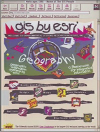
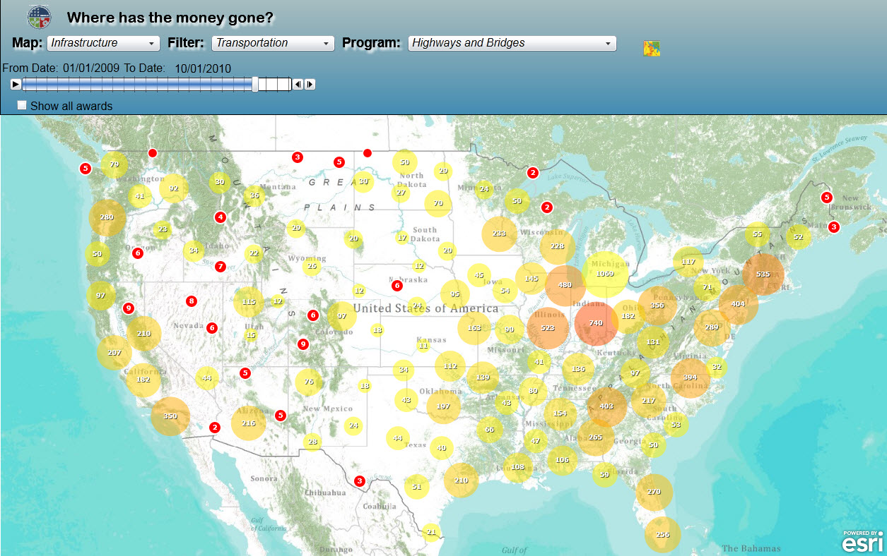

What is HTML5?

A brief history of web pages
Web pages started out with only text, images, and links
Using web servers to run applications and JavaScript to provide interactivity in a browser, we could develop applications
Application work: Server > Desktop
To create programs that worked with complex graphics or other functionality, a plugin (i.e., Flash or Silverlight) was needed
means that complex applications can be written using:
- HTML (content, structure)
- JavaScript (programming language)
- CSS (style, design)
Application work: Server < Desktop
HTML5 is many things

Key new features
Application functionality
- File API - upload files into the browser
- Cross-Origin Resource Sharing (CORS) - mashups w/o proxies
- Web Sockets - live communication to/from server
Web Sockets (i.e., GeoEvent Processor Live!)
CSS (What you've been seeing)
- Animations (slide transitions)
- 2D/3D Rotation/Transformation (slide transitions)
- Gradients (this background)
- Web fonts (the title is Avenir)
Graphics Capabilities
- Canvas - in-page editable images
- SVG - standardized vectors
- WebGL - 3D display (CityEngine Viewer)
Canvas (do adjust your picture)
Mobile apps
- Geolocation - where are you?
- Web Storage - offline storage
- Touch Events - use your fingers
Geolocation (you are here!)
Not all browsers are created equal
(IE 8, I'm looking at you)
▶ Note: U.S. Government has an IE 8 standard ◀
Esri & HTML5
The JavaScript API supports HTML5 (HTML5 ≈ JS)
Feature not in the Esri API? Use normal JavaScript methods.
DTC People
- Evan Caldwell
- Ken Gorton
- Kevin Sigwart
- James Tedrick
- Frank Xia
View this presentation at http://tedrick.github.io/html5-presentation
This presentation was made with the HTML5 library reveal.js